Roteiro Final - Projeto 2025.1: API RESTful + Docker + AWS Lightsail
Link do Projeto: GitHub - Projeto Cloud 2025.1
Integrantes:
- Rafael Agnelo
- Pedro Henrique Vidal
1. Objetivo do Projeto
O objetivo do nosso projeto foi construir uma aplicação completa baseada em uma API RESTful com FastAPI, capaz de:
- Cadastrar e autenticar usuários
- Proteger os endpoints com autenticação JWT
- Fazer scraping de dados reais (atualizados diariamente)
- Containerizar a aplicação com Docker
- Implantar a solução na nuvem utilizando AWS Lightsail
Além disso, nos preocupamos com boas práticas como segurança, estrutura de pastas, documentação com MkDocs e monitoramento de custos.
📸 Imagem conceitual ou diagrama geral do projeto 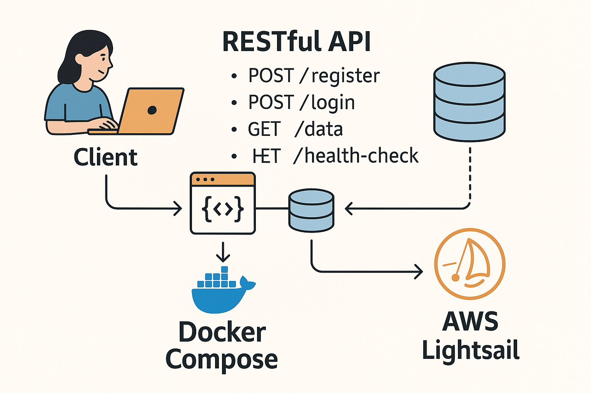
{kind=link}
2. Etapa 1 – Construção e Dockerização da API
2.1 Desenvolvimento da API com FastAPI
Criamos uma aplicação em Python utilizando FastAPI como framework principal. A estrutura inicial foi organizada da seguinte forma:
api/
├── app/
│ ├── main.py
│ ├── auth.py
│ ├── models.py
│ ├── database.py
│ └── scraping.py
├── Dockerfile
├── requirements.txt
compose.yaml
.env
2.2 Endpoints Implementados
1. POST /registrar
- Recebe nome, email e senha do usuário
- Valida se o email já está cadastrado
- Salva o usuário com a senha criptografada (bcrypt)
- Retorna um token JWT
2. POST /login
- Verifica credenciais (email e senha)
- Gera e retorna um novo token JWT se forem válidas
3. GET /consultar
- Protegido por JWT
- Realiza scraping de dados atualizados (utilizamos a API da AwesomeAPI para capturar cotações do BTC em BRL)
- Retorna os dados em JSON
4. GET /health-check
- Endpoint simples para verificar se a aplicação está ativa
- Usado pela AWS Lightsail para monitoramento
Endpoint Registrar:
{kind=link}
Endpoint Consulta:
{kind=link}
Endpoint Health Check: 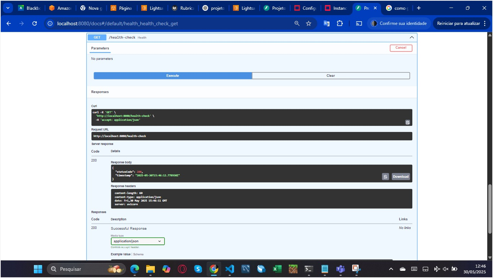
{kind=link}
2.3 Containerização com Docker
Criamos um Dockerfile para empacotar nossa aplicação FastAPI e adicionamos o compose.yaml com dois serviços:
- app: a aplicação FastAPI
- db: PostgreSQL (versão 17)
services:
db:
image: postgres:17
environment:
POSTGRES_DB: ${POSTGRES_DB:-projeto}
POSTGRES_USER: ${POSTGRES_USER:-projeto}
POSTGRES_PASSWORD: ${POSTGRES_PASSWORD:-projeto}
ports:
- "5432:5432"
app:
image: rafaelagnelo/projetocloudtrafaelph:latest
ports:
- "8080:8080"
environment:
DATABASE_URL: "postgresql://${POSTGRES_USER:-projeto}:${POSTGRES_PASSWORD:-projeto}@db/${POSTGRES_DB:-projeto}"
JWT_SECRET: "troque-esta-chave"
depends_on:
db:
condition: service_healthy
Executamos tudo com o comando:
Publicamos nossa imagem no Docker Hub:
docker build -t rafaelagnelo/projetocloudtrafaelph:latest .
docker push rafaelagnelo/projetocloudtrafaelph:latest
🎥 Vídeo de execução da Etapa 1 local (docker compose): https://youtu.be/hywXJr8h0Ig
3. Etapa 2 – Deploy na AWS Lightsail
3.1 Criação do Container no Lightsail
Acessamos o painel do AWS Lightsail e criamos um novo serviço de container:
- Nome:
fastapi-service - Power: Micro
- Número de instâncias: 1
- Imagem:
rafaelagnelo/projetocloudtrafaelph:latest
📸 Painel do container na AWS Lightsail: 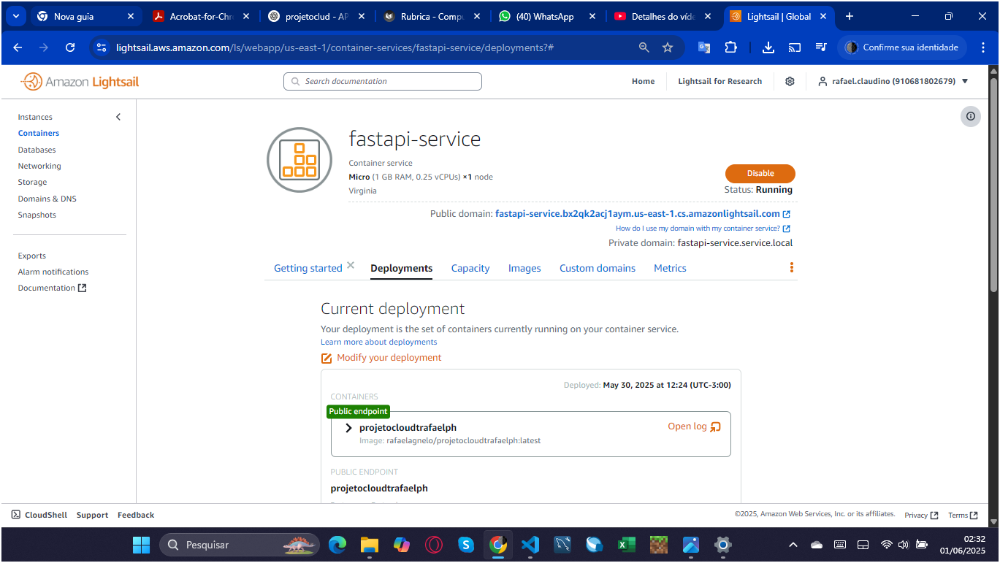
{kind=link}
3.2 Banco de Dados no Lightsail
Criamos um banco PostgreSQL gerenciado:
- Nome:
fastapi-db - Usuário:
admin - Senha: [armazenada em ambiente]
- Modo público ativado
- Endpoint copiado e usado na variável
DATABASE_URL
📸 Painel do banco de dados na AWS Lightsail: 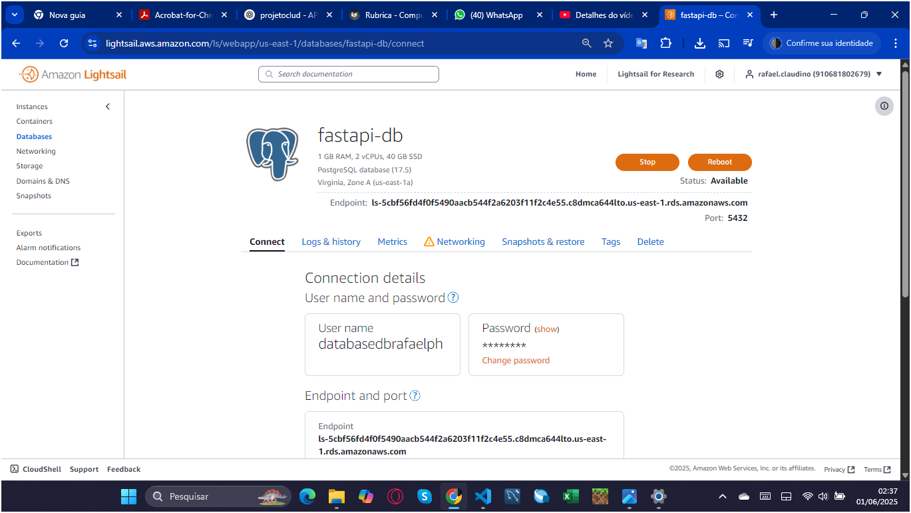
{kind=link}
3.3 Variáveis de Ambiente
As credenciais e chaves JWT foram definidas via painel do Lightsail em cada serviço:
📸 Seção de environment variables no container service: 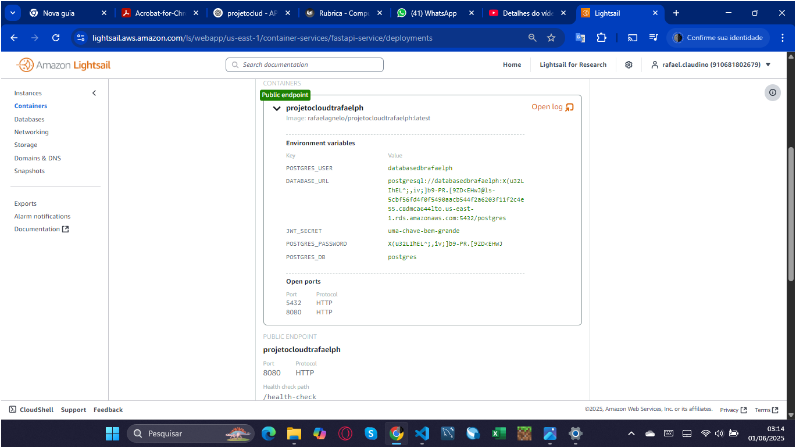
{kind=link}
3.4 Testes de Implantação
Testamos os endpoints pelo próprio link fornecido pela AWS Lightsail. Verificamos:
- Criação de usuários
- Login e geração de token
- Acesso ao
/consultarcom scraping de dados reais - Funcionamento do
/health-check
O domínio publico foi configurado para apontar para o serviço de container, permitindo acesso externo.
Link do domínio de acesso: Public Domain FastAPI Service
Prints dos testes realizados:
Endpoint registrar: 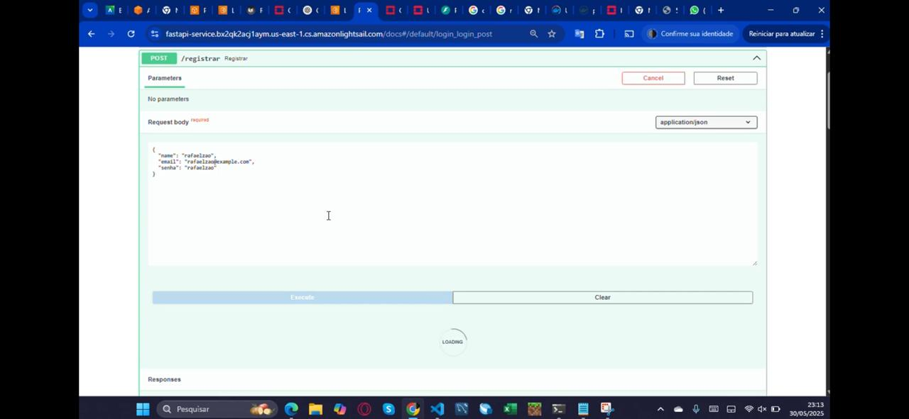
{kind=link}
Resposta do endpoint registrar: 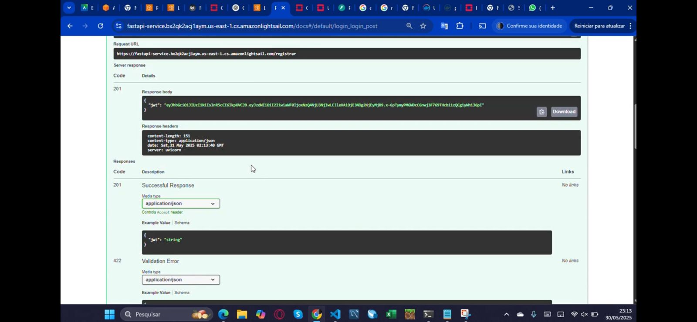
{kind=link}
Endpoint login/consulta: 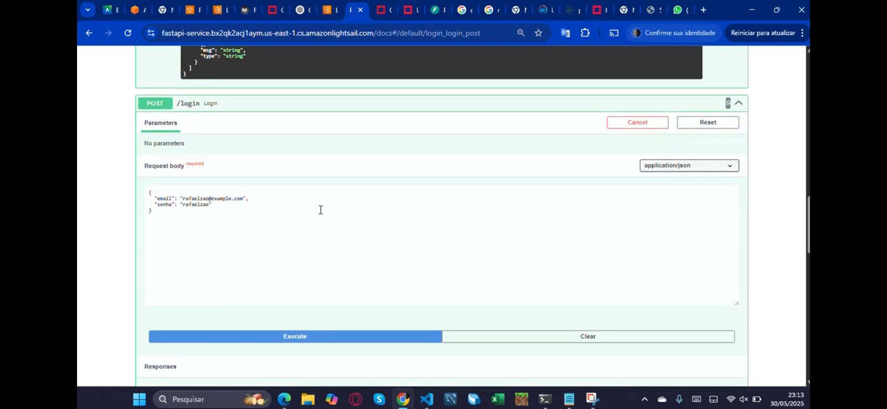
{kind=link}
Resposta do endpoint login/consulta: 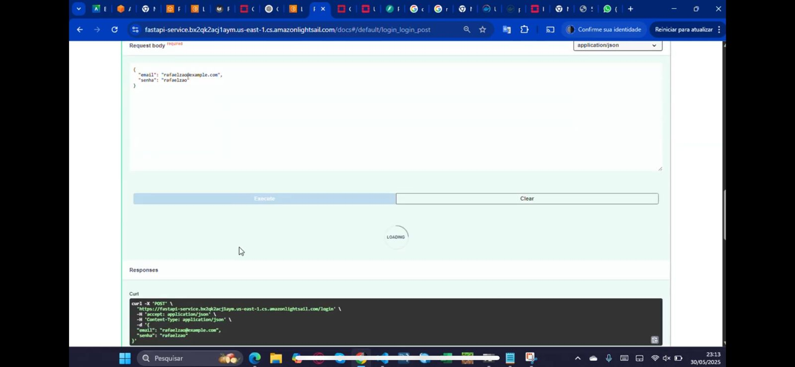
{kind=link}
Resposta do endpoint login/consulta: 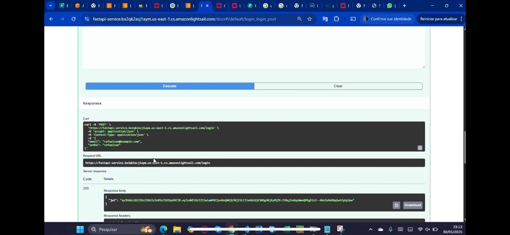
{kind=link}
Saída de resposta da API no terminal: 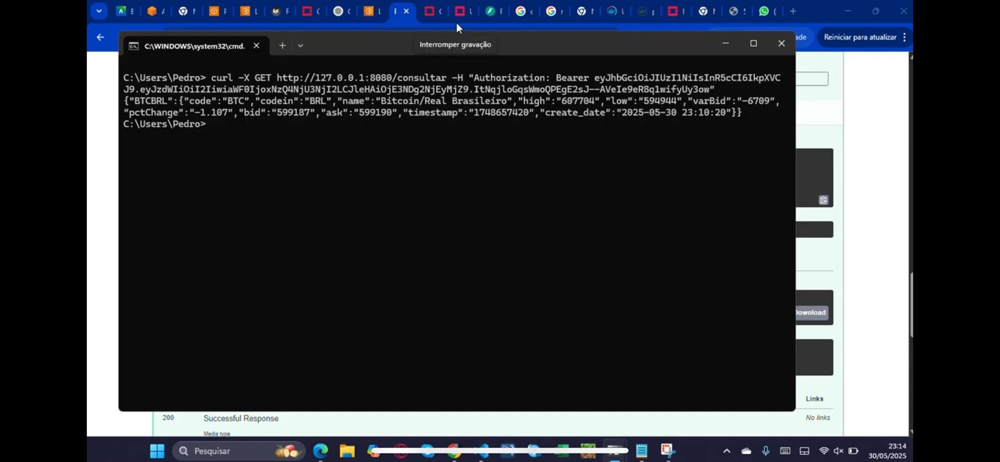
{kind=link}
3.5 Custos
Para controle dos custos, acessamos o painel de billing da AWS. O custo diário para 1 instância Micro + banco ficou dentro da meta (R$ 0,07 por hora). Também projetamos os custos para:
- 1 instância: ~$5/mês
- 5 instâncias: ~$25/mês
- 10 instâncias: ~$50/mês (limite do projeto)
🎥 Vídeo da Etapa 2 (aplicação rodando na AWS com banco em cloud): https://youtu.be/IRWKyjIClms
5. Conclusão
O projeto foi essencial para consolidarmos conhecimentos em FastAPI, autenticação JWT, web scraping, Docker, deploy em cloud e boas práticas de segurança e documentação. Saímos desse processo mais preparados para lidar com infraestrutura real e desafios práticos do dia a dia em produção.